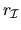
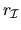
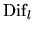
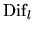
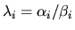
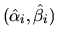
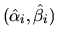
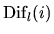
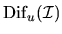
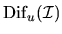

Next: Singular Eigenproblems
Up: Further Details: Error Bounds
Previous: Balancing and Conditioning
Contents
Index
Computing si,  ,

and
,

and
 ,

,

To explain si, ,
,
and
in Table 4.7 and Table 4.8,
we need to introduce a condition number for an individual eigenvalue,
block diagonalization of a matrix pair and
the separation of two matrix pairs.
Let
be a simple eigenvalue of (A, B) with
left and right
eigenvectors yi and xi, respectively.
si is the reciprocal condition number for a
simple eigenvalue of (A, B) [95]:
Notice that
yHiAxi / yHiBxi is equal to
.
The condition number si in (4.11) is independent of
the normalization of the eigenvectors.
In the error bound of Table 4.7 for a simple eigenvalue and
in (4.10), si
is returned as RCONDE(i) by xGGEVX (as S(i) by xTGSNA).
We assume that the matrix pair (A, B) is in the generalized Schur form.
Consider a cluster of m eigenvalues, counting multiplicities.
Moreover, assume the n-by-n matrix pair (A, B) is
where the eigenvalues of the m-by-m matrix pair
(A11, B11) are exactly those in which we are interested.
In practice, if the eigenvalues on the (block) diagonal
of (A, B) are not in the desired order,
routine xTGEXC
can be used to put the
desired ones in the upper left corner as shown [73].
An equivalence transformation that block-diagonalizes (A, B)
can be expressed as
Solving for (L,R) in (4.13) is equivalent to solving
the system of linear equations
Equation (4.14) is called a generalized Sylvester equation
[71,75]. Given the
generalized Schur form (4.12), we solve equation (4.14) for
L and R using the subroutine xTGSYL.
and
for the eigenvalues of
(A11, B11)
are defined as
In the perturbation theory for the generalized eigenvalue problem,
 and
play the same role as the norm
of the spectral projector |P|
does for the standard eigenvalue problem in section 4.8.1.3.
Indeed, if B = I, then p = q and p equals the norm of the
projection onto an invariant subspace of A.
For the generalized eigenvalue problem we need both a left and a right
projection norm since the left and right deflating subspaces are (usually)
different. In Table 4.8,
li and
denote the left projector norm corresponding
to an individual
eigenvalue pair

and a
cluster of eigenvalues
defined by the subset
and
play the same role as the norm
of the spectral projector |P|
does for the standard eigenvalue problem in section 4.8.1.3.
Indeed, if B = I, then p = q and p equals the norm of the
projection onto an invariant subspace of A.
For the generalized eigenvalue problem we need both a left and a right
projection norm since the left and right deflating subspaces are (usually)
different. In Table 4.8,
li and
denote the left projector norm corresponding
to an individual
eigenvalue pair

and a
cluster of eigenvalues
defined by the subset  ,
respectively. Similar notation is used
for ri and .
The values of
and
are returned as RCONDE(1)
and RCONDE(2) from xGGESX (as PL and PR from xTGSEN).
,
respectively. Similar notation is used
for ri and .
The values of
and
are returned as RCONDE(1)
and RCONDE(2) from xGGESX (as PL and PR from xTGSEN).
The separation of two matrix pairs
(A11, B11) and
(A22, B22)
is defined as the smallest singular value of the linear map in (4.14)
which takes (L, R) to
(A11 R - L A22, B11 R - L B22)
[94]:
is a generalization of the separation
between two matrices (
 in (4.6))
to two matrix pairs, and it
measures the separation of their spectra in the following sense.
If
(A11, B11) and
(A22, B22) have a common eigenvalue,
then
is zero, and it is
small if there is a small perturbation of either
(A11, B11) or
(A22,
B22) that makes them have a common eigenvalue.
in (4.6))
to two matrix pairs, and it
measures the separation of their spectra in the following sense.
If
(A11, B11) and
(A22, B22) have a common eigenvalue,
then
is zero, and it is
small if there is a small perturbation of either
(A11, B11) or
(A22,
B22) that makes them have a common eigenvalue.
Notice that
does not generally equal
![${\rm Dif}_u[(A_{11}, B_{11}),(A_{22}, B_{22})]$](img832.gif) (unless Aii and Bii
are symmetric for i = 1, 2). Accordingly, the ordering of the arguments plays
a role for the separation of two matrix pairs, while it does not for the
separation of two matrices
(
).
Therefore, we introduce the notation
(unless Aii and Bii
are symmetric for i = 1, 2). Accordingly, the ordering of the arguments plays
a role for the separation of two matrix pairs, while it does not for the
separation of two matrices
(
).
Therefore, we introduce the notation
An associated generalized Sylvester operator
(A22 R - L A11, B22 R - L B11)
in the definition of
is obtained from
block-diagonalizing a regular matrix pair in lower block triangular
form, just as the operator
(A11 R - L A22, B11 R - L B22)
in the definition of
arises from
block-diagonalizing a regular matrix pair (4.12)
in upper block triangular form.
In the error bounds of Tables 4.7 and 4.8,

and
 denote
denote
![${\rm Dif}_l[(A_{11},
B_{11}),(A_{22}, B_{22})]$](img835.gif) ,
where
(A11, B11) corresponds
to an individual eigenvalue pair
and a cluster of eigenvalues
defined by the subset ,
respectively. Similar notation is used
for
and
.
xGGESX reports estimates of
and
in RCONDV(1)
and RCONDV(2) (DIF(1) and DIF(2) in xTGSEN), respectively.
,
where
(A11, B11) corresponds
to an individual eigenvalue pair
and a cluster of eigenvalues
defined by the subset ,
respectively. Similar notation is used
for
and
.
xGGESX reports estimates of
and
in RCONDV(1)
and RCONDV(2) (DIF(1) and DIF(2) in xTGSEN), respectively.
From a matrix representation of (4.14) it is possible to formulate an
exact expression of
as
where Zu is the 2m(n - m)-by-2m(n - m) matrix
and
is the Kronecker product. A method
based directly on forming Zu is generally impractical,
since Zu can be as large as
n2/2 x n2/2.
Thus we would require as much as O(n4) extra workspace and O(n6)
operations, much more than
the estimation methods that we now describe.
We instead compute an estimate of
as the reciprocal value of an
estimate of
,
where Zu is the matrix representation of the generalized Sylvester
operator. It is possible to estimate
by solving
generalized Sylvester equations
in triangular form.
We provide both Frobenius norm and
one norm
estimates [74].
The one norm estimate makes the condition estimation uniform with the
nonsymmetric eigenvalue problem. The Frobenius norm estimate
offers a low cost and equally reliable estimator.
The one norm estimate is a factor 3 to 10 times more
expensive [74]. From
the definition of
(4.17) we see that
estimates can be computed by using the algorithms for
estimating .
Frobenius norm estimate: From
the Zux = b representation of the
generalized Sylvester equation (4.14) we get a
lower bound on
:
To get an improved estimate we try to choose right hand sides
(C, F) such that
the associated solution (L, R) has as large norm as possible, giving the
estimator
Methods for computing such (C, F) are described in
[75,74].
The work to compute DIF(1) is comparable to solve a generalized
Sylvester equation, which costs only
2m2(n-m) + 2m(n-m)2
operations if the matrix pairs are in generalized Schur form.
DIF(2) is the Frobenius norm
estimate.
One norm norm estimate: From the relationship
we know that
can never differ more than a factor
from
.
So it makes sense to compute an
one norm estimate of .
xLACON implements a method for estimating the one norm of a square matrix,
using reverse communication for evaluating matrix and vector products
[59,64]. We apply this method to
by providing the solution vectors x and y of Zux = z and
a transposed system ZuTy = z, where z is determined by xLACON.
In each step only one of these generalized Sylvester equations is solved
using blocked algorithms [74].
xLACON returns v and
such that Zu-1w = v and
,
resulting in the one-norm-based estimate
The cost for computing this bound is roughly equal to the number of steps
in the reverse communication times the cost for one generalized
Sylvester solve. DIF(2) is the one norm
estimate.
The expert driver routines xGGEVX and xGGESX compute the Frobenius
norm estimate (4.20).
The routine xTGSNA also computes the Frobenius
norm estimate (4.20) of
and .
The routine xTGSEN optionally computes the Frobenius norm estimate
(4.20) or the one norm estimate (4.22).
The choice of estimate is controlled by the input parameter IJOB.
Next: Singular Eigenproblems
Up: Further Details: Error Bounds
Previous: Balancing and Conditioning
Contents
Index
Susan Blackford
1999-10-01